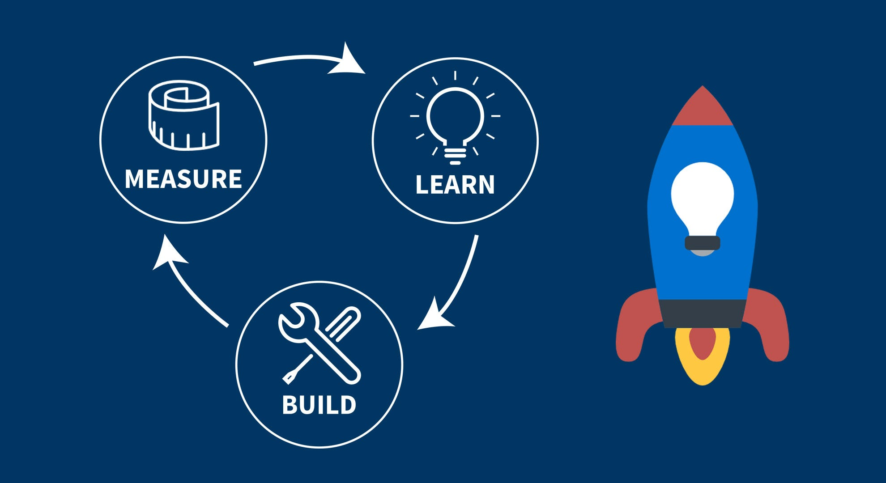

The Greyio heart experiment


A startup is an organization in a perpetual learning state until it discovers a simple, cost-effective, repeatable, scalable, and high-growth-led business model. The best startups continue to learn even when they reach maturity by being stable high performant companies.
At both Book Dojo and Godda Game we don’t attach so much value to naming conventions but our mother corporation emb… advised us to take Greyio Heart Experiment as the code name of this experimentation that these two startups are doing around publishing and gaming that could lead to potential market discoveries and funding.
Here the word heart has nothing to do with this data-driven book about the theory of evolution that Book Dojo is working on
But it is all about empathy, meaning caring about others rather than ourselves. Supporting others whatever their opinions are. Being just empathic to others. Because Emb…, Book Dojo, Godda Godda all believe in the importance of empathy when it is about marketing an idea, a solution, a product, a service, or just ourselves. Giving to others is just the mantra of this experiment then this book below maybe can give us some clues because of the word Give
But we are here to take nothing from other than your involvement with what we will be offering to you.
Greyio means something for the naming convention of the mother startup emb… and is an internal secretly held composition of two words that have clear meanings.
Emb…, the mere startup, reminded us of the importance of developing this platform that will help manage and execute better this experiment.
Time to code for each of us (Emb.. Book Dojo and Godda Game).
it will be simple and hard because it’s just me, the alone Ceo and founder but it will be for sure better and easy if it is each one of us.
PS: As the CEO and founders of all these 3 ventures startups I should agree that I have not still read Give and Take, the book of Adam Grant that I have already heard of but I am eager to engage myself in reading this book like how you will engage yourself to what we will offer to you.